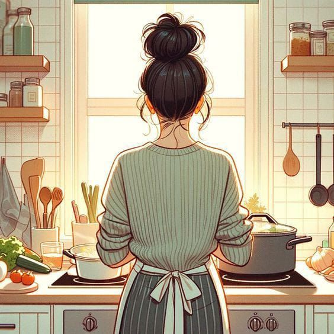

What Penny Loves
Motherhood
Penny cherishes being a mother. She finds joy in nurturing, guiding, and creating lasting memories with her children.
Reading
Penny has a deep love for books. She enjoys getting lost in stories, expanding her knowledge, and sharing books with others.

Cooking
Penny loves experimenting in the kitchen, creating delicious meals that bring joy and togetherness to her family and friends.